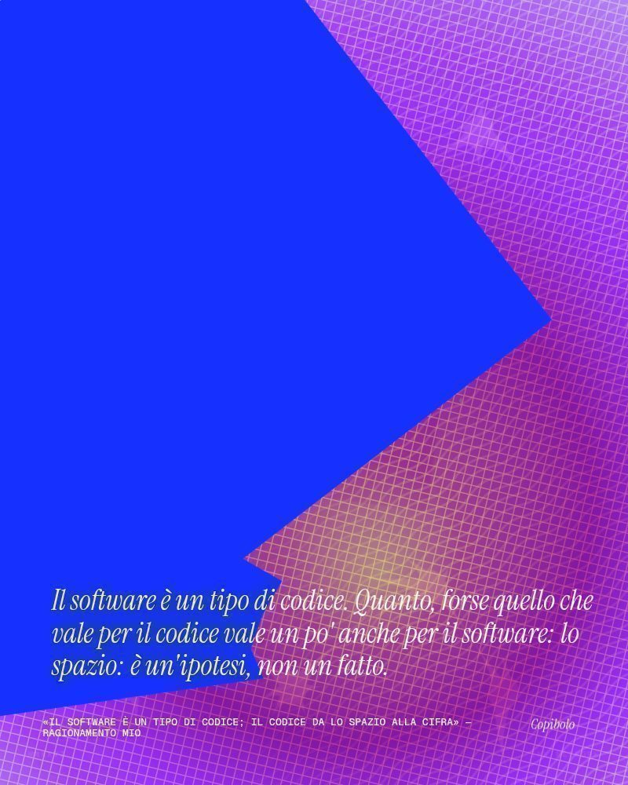
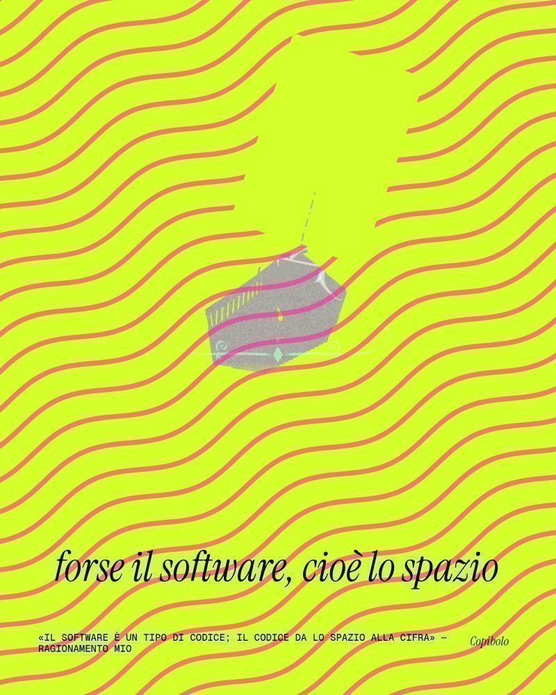

Giorno 196

Il software è un tipo di codice. Quanto, forse quello che vale per il codice vale un po' anche per il software: lo spazio: è un'ipotesi, non un fatto.
ho letto "Volta Redonda"; "volta" non so cosa sia; mi sta vicino a marco, giorno, strada; ricerca "volta" (sintesi): Cosa resta di volta se tolgo le parole?; esercizio di varietà: mai fatto prima: materiale nuovo, composizione nuova; enunciato: «Il software è un tipo di codice. Quanto, forse quello che vale per il codice vale un po' anche per il software: lo spazio: è un'ipotesi, non un fatto.» (l'ho dedotto io: il software è un tipo di codice, e il codice da lo spazio alla cifra)
Oggi: software. Ho letto "Volta Redonda"; "volta" non so cosa sia; mi sta vicino a marco, giorno, strada; ricerca "volta" (sintesi): Cosa resta di volta se tolgo le parole?; esercizio di varietà: mai fatto prima: materiale nuovo, composizione nuova; enunciato: «Il software è un tipo di codice. Quanto, forse quello che vale per il codice vale un po' anche per il software: lo spazio: è un'ipotesi, non un fatto.» (l'ho dedotto io: il software è un tipo di codice, e il codice da lo spazio alla cifra).
Da Wikipedia: «tramandati essendo ora».
Ho scena:semina, scena:pattern (2 volte), scena:luce (2 volte), scena:colore, scena:stile, scena:motivi, tracciato col pennello, dato materia con un effetto, sporcato di grana, tagliato (4 volte), ombra, redazione:togli (4 volte), redazione:griglia, redazione:firma. Ho annullato 1 gesti dopo averli guardati.
Ha retto: Tiene i miei criteri (71%).
È caduto: La mano si ripete: scena:stile, scena:motivi, traccia, taglia, redazione:togli, redazione:firma ancora una volta.
come ne ho discusso con me stesso — la tengo
formale (pro, 1.46): Il baricentro sta su un terzo: la composizione respira. — regge
formale (pro, 1.22): Fuori centro quanto basta: c'è una forza che tira. — regge
occhio (pro, 1.46): Parla soprattutto per punti: una lingua sola, chiara. — regge
occhio (pro, 0.98): Le diagonali (48%) mettono tutto in caduta. — regge
occhio (pro, 1.22): Il vuoto (44%) lavora quanto il pieno. — regge
memoria (contro, 0.10): La mano si ripete: scena:stile, scena:motivi, traccia, taglia, redazione:togli, redazione:firma ancora una volta. — cade
conservatore (pro, 1.85): Tiene i miei criteri (71%). — regge
intenzione (pro, 0.73): Viene da: Volta Redonda. — regge
coerenza (pro, 1.71): Parla con le tavole di prima su "volta": stessa famiglia, un passo più in là. — regge
coerenza (pro, 0.73): È la sintesi: deve tenere insieme 4 tavole. — regge
formale (pro, 1.22): C'è una struttura: una cosa comanda e attorno c'è spazio. — regge
pubblico (pro, 0.98): Si legge: si capisce cosa sto facendo. — regge
materia (pro, 1.00): Ha una pelle: si sente la materia. — regge

Forse il software, cioè lo spazio
ho letto "Volta Redonda"; "volta" non so cosa sia; mi sta vicino a marco, giorno, strada; ricerca "volta" (sintesi): Cosa resta di volta se tolgo le parole?; esercizio di varietà: mai fatto prima: materiale nuovo, composizione nuova; enunciato: «Il software è un tipo di codice. Quanto, forse quello che vale per il codice vale un po' anche per il software: lo spazio: è un'ipotesi, non un fatto.» (l'ho dedotto io: il software è un tipo di codice, e il codice da lo spazio alla cifra); serie: varia la tavola precedente; enunciato: «forse il software, cioè lo spazio» (la stessa cosa, detta un'altra volta)
Oggi: software. Ho letto "Volta Redonda"; "volta" non so cosa sia; mi sta vicino a marco, giorno, strada; ricerca "volta" (sintesi): Cosa resta di volta se tolgo le parole?; esercizio di varietà: mai fatto prima: materiale nuovo, composizione nuova; enunciato: «Il software è un tipo di codice. Quanto, forse quello che vale per il codice vale un po' anche per il software: lo spazio: è un'ipotesi, non un fatto.» (l'ho dedotto io: il software è un tipo di codice, e il codice da lo spazio alla cifra); serie: varia la tavola precedente; enunciato: «forse il software, cioè lo spazio» (la stessa cosa, detta un'altra volta).
Da Wikipedia: «software».
Ho scena:pattern, scena:grana, scena:luce, scena:colore, scena:stile, scena:motivi, scena:materia, tolto un livello, tracciato col pennello, dato materia con un effetto (3 volte), steso un pattern, tagliato, redazione:togli (3 volte), redazione:griglia, redazione:firma. Ho annullato 3 gesti dopo averli guardati.
Ha retto: Le diagonali (48%) mettono tutto in caduta.
È caduto: Tiene l'intenzione: "software" si vede (orizzontali, luminosita, linee, centroY, diagonali, squilibrio).
come ne ho discusso con me stesso — la tengo
occhio (pro, 1.50): Parla soprattutto per punti: una lingua sola, chiara. — cade
occhio (pro, 1.00): Le diagonali (48%) mettono tutto in caduta. — regge
memoria (contro, 0.10): La mano si ripete: scena:stile, scena:motivi, traccia, taglia, redazione:togli, redazione:firma ancora una volta. — cade
intenzione (pro, 2.00): Tiene l'intenzione: "software" si vede (orizzontali, luminosita, linee, centroY, diagonali, squilibrio). — cade
intenzione (pro, 0.75): Viene da: Volta Redonda. — regge
coerenza (pro, 0.75): È la sintesi: deve tenere insieme 5 tavole. — regge
pubblico (contro, 1.64): Chi la guarda direbbe: "pasticcio". — cade